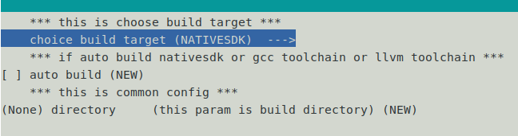

构建nativesdk使用指导¶
本章节内容会介绍 oebuild 如何快速构建nativesdk的方法
Note
在开始构建前，请确保构建主机满足以下条件：
至少有 50G 以上的空闲磁盘空间，建议预留尽可能多的空间。
至少有 8G 内存，建议使用内存、CPU数量更多的机器，增加构建速度。
第 1 步: 初始化工作目录¶
oebuild init [-u URL] [-b BRANCH] [DIRECTORY]-u <URL>：yocot-meta-openeuler 仓库地址，默认为 yocto-meta-openeuler。-b <BRANCH>：yocot-meta-openeuler 版本分支，默认为 master。 如需构建其它版本，直接使用该参数指定对应分支，例如：-b openEuler-22.03-LTS-SP2。<DIRECTORY>：需要创建的工作目录。注意，要确保当前用户拥有当前目录的读写权限，否则会报错：Permission denied；且不能指定当前目录中已有的目录，否则会报错：mkdir <directory> failed。
# 例如： # 初始化 master 版本的工作目录 $ oebuild init workdir_master
成功创建工作目录后，切换到工作目录 执行以下命令，下载目标版本的项目源码及构建容器：
oebuild update
下载完成后，工作目录如下：
$ tree -L 1 workdir_master/ workdir_master/ ├── oebuild.log └── srcoebuild.log：oebuild 的操作日志。src：目标版本依赖的软件包源码目录，包括 yocto-meta-openeuler、yocto-poky等。后续构建所依赖的软件包也会自动下载到该目录。
第 2 步: 创建定制化的构建配置文件¶
在 oebuild 工作目录下，执行以下命令，创建定制化的构建配置文件：
oebuild generate --nativesdk [-d DIRECTORY]--nativesdk：表示构建nativesdk。-d <DIRECTORY>：构建目录，用于存放构建产物，同一构建目录支持多次重复构建。当不输入任何参数时，会进入命令行菜单选择界面。
oebuild generate具体界面如下图所示:

此时在”choice build target”中选择NATIVESDK表示构建NATIVESDK。
在directory输入编译目录名，至此按q，退出，按y确认即可生成编译目录
或者直接在命令行输入命令
# 例如： $ oebuild generate --nativesdk -d nativesdk
执行成功后，会在 oebuild 的工作目录下创建出 build 目录，如：
$ tree build/ build/ └── nativesdk └── compile.yaml
compile.yaml 为对应的构建配置文件，nativesdk编译仍然通过yocto来实现，因此其配置文件与OS镜像编译配置文件格式一致。
第 3 步: 构建 nativesdk¶
在 compile.yaml 的同级目录 （即第二步创建出来的构建目录）下，执行以下命令，开始构建：
# 进入构建容器
$ oebuild bitbake
8<-------- 进入容器环境 --------
# 构建nativesdk
$ bitbake buildtools-extended-tarball
# 构建完成后，退出容器环境
$ exit
See also
进入容器后，bitbake 的使用方法与 yocto 保持一致，一些常用命令如下：
bitbake <target> -c cleansstate：清理 <target> 的构建缓存，一般在重新构建 <target> 之前执行，以防止缓存影响新增的修改。bitbake <target> -e > env.log：输出关于 <target> 相关的构建环境变量到 env.log 中，一般用于帮助开发人员编写 <target> 的构建配方。bitbake <target> -g：输出 <target> 相关的构建依赖分析 pn-buildlist、task-depends.dot。
关于 bitbake 命令更详细丰富的用法，请参考 yocto bitbake manual。